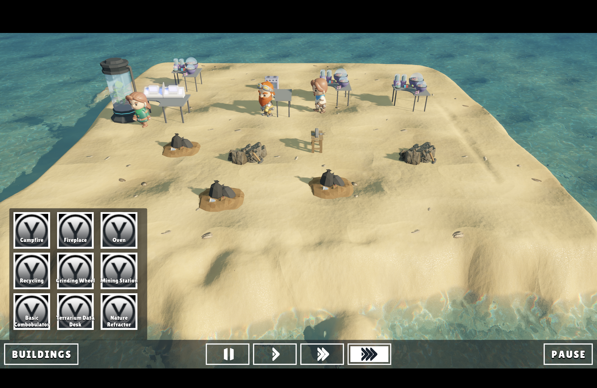

Colony Simulator Demo (2026)
Demonstration of Colony Sim Task Management system. Tasks do not do anything in this current version. This demo is purely to showcase that each npc/colonist has a dedicated skill (cooking, operating, or researching) and they will go to their corresponding task that demands that skill and any leftovers once those with higher priority are complete. Development of this project will continue, style may change (even from 3D to 2D).

